Apresentação editorial · Lume 1.0

Encontre a fonte de um combinado, acompanhe o contexto de um projeto e confira o que aconteceu depois.

Conversas autorizadas, autoria e fontes consultáveis.
Projetos e compromissos com contexto e correção.
Resultados e evidências, com estados distintos.
Autoria, data e fontes acompanham a memória. Sugestões podem ser corrigidas; resultados informados, verificados, enviados e aceitos têm estados diferentes.
Armazenamento e busca têm base local. A organização com ChatGPT envolve processamento remoto e depende de fontes autorizadas e configuração.
Olhos, braços e uma pequena lanterna dão forma ao Lume. No painel, a galeria permite conhecer as poses; prévias lúdicas são identificadas e não representam atividade nas conversas.
